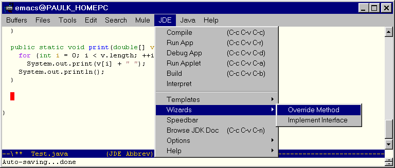
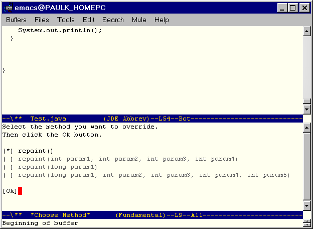
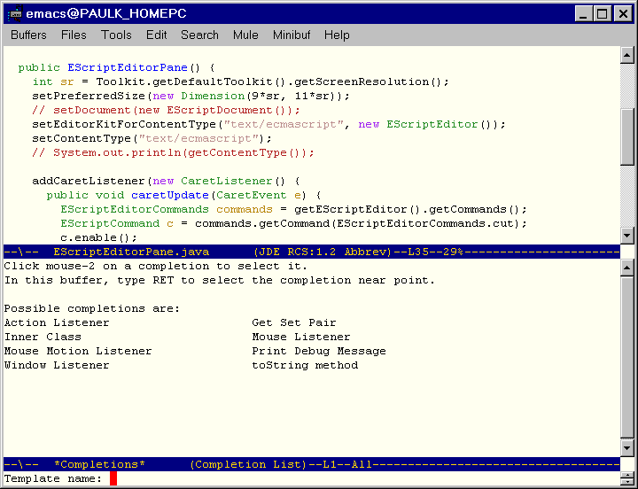
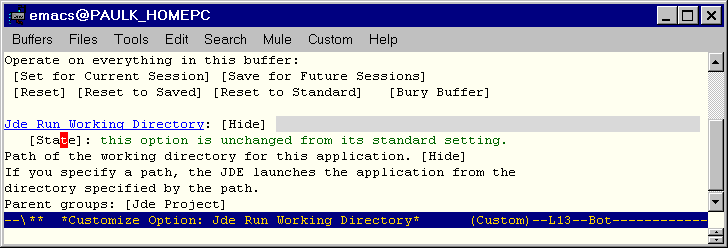

Welcome to the JDE User's Guide. This guide explains how to use the JDE to develop Java applications and applets. The guide assumes that you are familiar with Emacs and JavaSoft's Java development tools.
The Java Development Environment (JDE) is an Emacs Lisp package that interfaces Emacs to third-party Java application development tools, such as those provided by JavaSoft's Java Development Kit (JDK). The result is an integrated development environment (IDE) comparable in power to many commercial Java IDEs. Features include:
The JDE requires the following software:
The JDE distribution includes the following files:
See the Emacs JDE Home Page for instructions on downloading and installing the most recent version of the JDE.
Please send bug reports and enhancement suggestions to Paul Kinnucan at paulk@mathworks.com.
To edit an existing Java source file, load it into an Emacs buffer by executing C-x f. Loading a Java source file into a buffer causes the buffer to enter into jde-mode, a variant of java-mode, which is in turn a variant of the standard Emacs cc-mode for editing source files written in C and related languages. Jde mode offers all the specialized source file editing commands of cc-mode plus functions for compiling, running, and debugging Java source files. You can invoke the commands by selecting them from the JDE menu that jde-mode displays on the Emacs menu bar or by typing the commands in the Emacs minibuffer (see the figure below).
The JDE provides an optional abbreviation mode for Java keywords. When this mode is enabled, you can type an abbreviation and JDE replaces the abbreviation with the keyword. For example, in abbreviation mode, to enter the Java keyword extend, type ext followed by a space. The JDE replaces ex with extend. To enable abbreviation mode, select JDE->Options->Project and toggle the boolean variable jde-enable-abbrev-mode. To change, remove, or add an abbreviation, edit the variable jde-mode-abbreviations in the project customization buffer.
The JDE provides a set of commands that generate skeleton Java code. These commands fall into two broad categories: template-based commands and programmatic commands ("wizards"). The template-based commands use tempo templates to generate code (see the tempo.el file in the Emacs distribution for a discription of tempo templates). The code wizards generate code programmatically without using templates. There is some overlap in these commands. The main advantage of the wizards is that they are more powerful. For example, the JDE provides a code wizard that can generate an implementation of any interface defined on the classpath of the current project. It also provides template-based commands for generating implementations of interfaces but for only a few of the standard Java interfaces. The main advantage of the templates is that they can be easily customized.
The JDE provides the following code generation wizards.
The method override wizard generates a skeleton method that overrides a similarly named method defined by a superclass.
To override a method of a superclass:
The point must be within the class that is overriding the method.

The JDE prompts you to enter the name of the method to be overridden in the minibuffer.
The name must be the name of a method defined by an ancestor of the class in which the Emacs point is located. The compiled class of the ancestor must be on the classpath specified by jde-global-classpath.
If the ancestors of the class in which you are overriding the method define more than one method of the same name, the wizard displays a dialog buffer that lists the methods. For example, Java's awt class hierarchy defines several variants of the method repaint. If you specify repaint as the method to override, the JDE displays the following dialog buffer:

The dialog buffer lists the signature of each variant of the method you specified. Next to each signature is a radio button. The radio button of the currently selected signature contains an asterisk. To select another signature, right-click the radio button next to the variant. To confirm your selection and dismiss the dialog, right-click the [Ok] button.
The wizard inserts a skeleton implementation of the selected method at the current point in the Java source buffer.
The wizard also inserts import statements for any classes referenced by the method that are not already imported by the containing class either explicitly or implicitly. The wizard inserts the import statements at the head of the source buffer after any existing import statements, or any package statement, or the first blank line in the buffer.
Note: The method override wizard uses the BeanShell to create the interface implementation. If the BeanShell is not currently running, the wizard starts the BeanShell. Thus, if the BeanShell is not already running, you may experience a short pause the first time you override a method.
This wizard creates a skeleton implementation of any interface defined on the classpath specified by jde-global-classpath.
To create an implementation of an interface:
The JDE prompts you to enter the name of the interface to be implemented.
The wizard inserts skeleton implementations of the methods declared by the interface at the current point in the current buffer. It inserts import statements for any classes required by the interface at the head of the current buffer (only if import statements do not already exist for the required classes). It also updates or creates an implements clause for the class.
Note: The interface wizard uses the BeanShell to create the interface implementation. If the BeanShell is not currently running, it starts the BeanShell. Thus, if the BeanShell is not already running, you may experience a short pause the first time you use the wizard.
These commands create buffers containing a skeleton Java class. Each command prompts you to enter the path to a new Java source file. They then create a buffer for the new file and insert a template for a class of the same name as the newly created file. In particular, the command
You can create an empty Java class buffer by selecting Files->Open (C-x f) and entering the path for a new file whose root name is the same as the class you want to create and whose extension is .java.
You can specify boilerplate text (for example, a copyright notice) to be inserted at the head of class source files created by the JDE. The JDE provides two ways to specify the boilerplate text. The simplest way is to enter the lines of boilerplate text as the value of the customization variable jde-gen-buffer-boilerplate. Another way to specify the text is to set the value of the customization variable jde-gen-boilerplate-function to a function that generates the boilerplate text. (The default value of this variable is jde-gen-create-buffer-boilerplate, which returns the value of the boilerplate variable, jde-gen-buffer-boilerplate). The functional approach allows you to generate boilerplate text dynamically by evaluating the appropriate Lisp code. By saving the values of boilerplate variables in project files, you can specify different boilerplate text for each project.
The following JDE customization variables control creation of
autocoded Java source buffers:
| Variable | Group | Usage |
|---|---|---|
| jde-gen-class-buffer-template | Autocode | Template for a generic public class buffer. |
| jde-gen-console-buffer-template | Autocode | Template for a console application buffer. |
| jde-gen-jfc-app-buffer-template | Autocode | Template for a JFC (Swing) application. |
| jde-gen-buffer-templates | Autocode | Specifies templates available to create Java buffers. |
| jde-gen-buffer-boilerplate | Autocode | Specifies lines of text to be inserted at the head of class files. |
| jde-gen-boilerplate-function | Autocode | Specifies a function that returns a string of boilerplate text. The default value is jde-gen-create-buffer-boilerplate, which returns the value of jde-gen-buffer-boilerplate. |
See Customizing Autocode
Templates for information on how to customize the class
autocode templates.
The following commands insert templates at the current point in the buffer:
The following variables control generation of code at
point:
| Variable | Group | Usage |
|---|---|---|
| jde-gen-get-set-var-template | Autocode | Defines a get/set method pair template. |
| jde-gen-listener-action-template | Autocode | Defines an action listener template. |
| jde-gen-listener-window-template | Autocode | Defines a window listener template. |
| jde-gen-listener-mouse-template | Autocode | Defines a mouse listener template. |
| jde-gen-inner-class-template | Autocode | Defines a template for creating a class inside another class or inside an existing source buffer. |
| jde-gen-code-templates | Autocode | Specifies available code templates. |
See
You can customize JDE autocode templates, using the Emacs customization feature.
To customize an autocode template:
The JDE displays a customization buffer containing the autocode templates.
The JDE uses the template format defined by tempo.el to represent class templates. Each template consists of a list of strings, symbols, and functions, each of which represents content to be inserted successively into the buffer at the current point. The strings represent fixed content. The symbols and functions represent variable content. See the docstring for the function tempo-define-template for more information, including the meaning of special symbols such as 'n>.
A menu pops up with a list of options for saving your changes.
Select Save for Future Sessions if you want your changes to apply to all projects. If you want your changes to apply only to the current projects, select Set for Current Session. Then select JDE->Options->Save Project to save your changes in the current project's project file.
The JDE considers any command (interactive function) that inserts code into a buffer at point to be a template. The JDE uses the Emacs tempo library to create built-in templates. You can use tempo to create your own, add-on templates (see below and the doc for the tempo-define-template for more information) or create templates from scratch. In either case, once you have created a template, you can add it to the JDE's lists of available code and/or buffer templates, using the JDE's jde-gen-code-templates and/or jde-gen-buffer-templates variables, respectively. Adding a template to these lists enables you to invoke the templates from the JDE menus. When adding a template, you need to specify a unique title for the template. These titles enable you to specify the templates when invoking them, using the JDE's custom code template commands (Files->JDE New->Custom and JDE->Generate->Custom). You can use auto completion to enter a template title when invoking a custom code generation command. Note that you can specify different sets of templates for different projects, by setting and saving the template list variables in project files. See the following sections for more information:
The tempo-define-template macro enables you to define a
template and a function that inserts that template at the current
point in the current buffer. You specify the template as a list
oftemplate elements where each element is text, a special symbol,
or a Lisp expression. The function inserts each text element
exactly
as specified in the buffer; it replaces special symbols with some
text (e.g., user input), and it replaces Lisp expressions with
the text that results from evaluating them.
For example, the following Lisp code
(tempo-define-template
"foo" ;; template name
'("System.out.println(\"foo\");") ;; template definition
"f" ;; abbreviation
"Inserts a print foo message") ;; template documentation
defines a template for Java code hat always prints "foo" to standard out:
System.out.println("foo");
Notice that the template definition uses the Lisp string escape character to specify the string "foo". This is necessary when you want to include quoted strings in a template definition.)
The sample Lisp form also defines an interactive template function tempo-template-foo. Now suppose you insert the sampe code in your .emacs file. After Emacs starts up, whenever you enter the command M-x tempo-template-foo, Emacs inserts
System.out.println("foo");
at the current point in your Java source buffer (or any buffer, tempo doesn't care).
The preceding example is admittedly not vary useful because it always prints the same text. You can create more useful templates, using special tempo template symbols and lisp forms. This approach, for example, allows you to create a template that can print any user-defined text to standard out:
(tempo-define-template
"debug"
;; template name
'("if (debug)"
n>
;; insert new line plus indent
"System.out.println("
(p "Enter debug message:
") ;; Prompts for debug message
");")
"d"
;; abbreviation
"Inserts a print debug message") ;;
template documentation
The template function produced by this example prompts you to enter the text to be printed when inserting the function into a buffer. In particular, it inserts
if (debug)
System.out.println(DEBUG-MESSAGE);
where DEBUG-MESSAGE is any text that you enter. For example, suppose you enter
"Selected color = " + color
at the prompt. The template function inserts
if (debug)
System.out.println("Selected color = " + color);
at the current point in the buffer.
See the documentation for tempo-define-template (type c-h f tempo-define-template) for more information on creating templates.
You can register templates that you create with the JDE. When
you register a template with the JDE, it appears among the list
of templates that you can select when you select JDE->Generate->Other....
You register a template by customizing the JDE variable jde-gen-code-templates.
The value of this variable is a list of the template functions
that the JDE command JDE->Generate->Other...
can invoke. To register a custom template, add its name to the
list. For example, the following screen shows the customization
buffer for
jde-gen-code-templates after it has been customized to
include the template defined in the previous example.
To insert a template that you have registered
The JDE displays the prompt
Enter template:
in the minibuffer.
or,
press the TAB key to display a list of templates in a completion buffer:

Select the template you want by double-clicking its name.
You can assign templates to keyboard keys to speed use of frequently used templates. For example, insert this form
(global-set-key [f9] 'jde-gen-to-string-method)
in your .emacs file to assign the F9 function key to the JDE template that generates a skeleton toString method.
The jde-compile command (JDE->Compile, C-c C-v C-c) compiles the Java source file in the current buffer, using javac, the Java compiler provided by the JDK, or another compiler that you specify (see Specifying a Compiler). The compile command displays the output of the compiler in a separate compilation buffer. If a compilation buffer does not exist, the compile command creates the buffer; otherwise, it reuses the existing compile output buffer. The compilation buffer operates in compilation-mode, a standard Emacs buffer mode. This mode greatly simplify locating compilation errors in the Java source code. For example, to find the line that cause a compilation error, simply click the error message in the compilation buffer.
The JDE allows you to specify compilation options by setting compilation variables.You must use the Emacs customization feature or, if available, JDE functions to set compilation variables. To use the customization feature, select Options->Compile from the JDE menu. (See Configuring the JDE for more information on using the customization feature). To save the compilation settings in the project file (see Using Project Files) for the current source buffer, select Options->Update Project from the JDE menu.
If you set the customization variable jde-read-compile-args to a non-nil value, the JDE compile command prompts you to enter compilation options in the minibuffer. It appends the options that you enter to the options specified via customization variables. The JDE saves the arguments that you enter in a minibuffer history list. You can recall previously entered options by pressing the up or down arrows on your keyboard.
Note: The JDE uses the values of the JDE customization variables to set the compiler's command-line option switches. The JDE assumes that the compiler you are using (specified by the customization variable jde-compiler) has the same set of command-line switches as the latest version of javac, the compiler supplied with JavaSoft's JDK. If the command-line switch for a particular option supported by the compiler your are using is not the same as that specified by the latest version of javac, you must use the variable jde-compile-option-command-line-args to select the option.
The following table lists the JDE compilation variables and
the functions used to set them.
| Name | Group | Usage |
|---|---|---|
| jde-compiler | Project | Specifies the compiler (javac, by default) to use to compile the code in the current source buffer. The command jde-set-compiler sets the buffer-local value of this option. |
| jde-compile-option-command-line-
args |
Compile | Specifies a string of command-line arguments to be passed to the compiler. The command jde-set-compile-options sets the buffer-local value of this variable. |
| jde-global-classpath | Project | Specify class paths for compile, run, and debug commands. The command jde-set-global-classpath sets the buffer-local value of this variable. |
| jde-read-compile-args | Project | Specify whether to read compile options from the minibuffer. |
| jde-compile-option-classpath | Compile | Specifies the classpath for compile command. If set, this variable overrides jde-global-classpath. |
| jde-compile-option-sourcepath | Compile | Specifies the path of source files for classes required to compile the current class. |
| jde-quote-classpath | Project | Quote the classpath argument. |
| jde-compile-option-directory | Compile | Specifies the directory into which to place the compiled class. |
| jde-compile-option-deprecation | Compile | Warn of use or override of a deprecated member or class |
| jde-compile-option-debug | Compile | Generate information about local variables for debug tools. |
| jde-compile-option-optimize | Compile | Directs the compiler to try to generate faster code. |
| jde-compile-option-depend | Compile | Analyze dependencies. |
| jde-compile-option-depend-switch | Compile | Command line switch that causes the compiler to analyze dependencies. |
| jde-compile-option-vm-args | Compile | Specify command-line arguments for Java interpreter used to run the compiler. |
| jde-compile-option-verbose-path | Compile | Print verbose messages. |
| jde-compile-option-verbose | Compile | List directories searched to compile current class. |
| jde-compile-option-nowarn | Compile | Turn off warnings. |
| jde-compile-option-encoding | Compile | Specify the source file encoding name, such as EUCJIS\SJIS. |
| jde-compile-option-target | Compile | Generate code compatible with a specified vm version. |
| jde-compile-option-bootclasspath | Compile | Specify classpath of standard libraries for target vm. |
| jde-compile-option-bootclasspath | Compile | Specify path of directories containing extensions for target vm. |
The JDE->Build command builds or rebuilds an application. This command has two operating modes: java and make. In java mode, this command uses javac's built-in make (-depend) facility to rebuild a project. In make mode, this command uses a user-specified make utility, such as GNU make, to rebuild a project. See Sample Makefile for an example of a makefile for building a Java project. JDE configuration variables control which mode is used. In particular, if the variable jde-build-use-make is non-nil, this command invokes the make program specified by the variable jde-make-program. If the variable jde-make-args is a non-empty string, this function uses its contents to invoke make; otherwise, it prompts you to enter command-line arguments for make. If jde-build-use-make is nil, this function invokes javac on the source file for the class specified by jde-run-app-class, with the -depend option. This causes javac to recompile all missing or out-of-date files required to run the application's main class. JDE finds the source for your application's main class by searching the directories specified by jde-db-source-directories. Thus, you must set this variable to use the Java build mode.
The following table summarizes the usage of the build
configuration variables.
| Name | Group | Usage |
|---|---|---|
| jde-build-use-make | Project | A non-nil values causes the JDE to use a make utility (specified by jde-make-program) to execute the JDE->Build command. A nil values causes the JDE to use javac with the -depend option to execute the JDE->Build command. |
| jde-make-program | Project | Specifies the name of the make utility used to execute the JDE->Build command. The default values is make. |
| jde-make-args | Project | Specifies a string of command-line arguments (for example, "-f mymakefile all") to be passed to the make utility used to execute the JDE->Build command. If the null string (""), the JDE prompts the user to enter the command-line arguments in the minibuffer. |
The following is a sample makefile that you can use as a model for creating makefiles to build Java projects.
JDK = d:/jdk1.2/lib/classes.zip
JMATH = d:/jmath/src
CLASSPATH = $(JMATH);$(JDK)
COMPILER = javac
VM = java
COPTIONS = -g -deprecation
ROPTIONS =
CLASSES = Test.class \
JMathError.class \
JMathException.class \
LinearSystem.class
.SUFFIXES: .java .class
all : $(CLASSES)
# Rebuild (if necessary) and run the JMath test suite.
run: $(CLASSES)
$(VM) -classpath "$(CLASSPATH)" jmath.Test
# Remove all class files from the project directory.
clean:
rm *.class
# Implicit rule for making Java class files from Java
# source files.
.java.class:
$(COMPILER) $(COPTIONS) -classpath
"$(CLASSPATH)" $?
The JDE allows you to run a Java application as an Emacs subprocess. You can run multiple applications concurrently, but only one instance of each application at a time. The JDE displays each application's standard and error output in an Emacs common interface (comint) buffer. You can interact with applications that accept command line input via the comint buffer. When interacting with an application, you can use any of comint-mode's extensive set of command-line history commands to speed interaction. To run an application, enter
M-x jde-run
or select Java->Run App on the Emacs menubar or type C-c C-v C-r.
The JDE allows you to specify run-time options by setting run variables.You can use the Emacs customization feature to set run-time variables interactively. To use the customization feature, select Options->Run from the JDE menu. (See Configuring the JDE for more information on using the customization feature). In some cases, the JDE also provides functions for setting the buffer-local values of the compilation variables. To save the compilation settings in the project file (see Using Project Files) for the current source buffer, select Options->Save Project from the JDE menu.
The JDE can start an application from any directory that you specify. By default, the JDE starts an application from the default directory of the current source buffer. The default directory of the current source buffer is the directory containing the source file displayed in the buffer. You can specify another directory as the startup directory by setting the JDE customization variable jde-run-working-directory.
To set this variable,
You can do this by typing
M-x customize-variable jde-run-working-directory
or selecting Options->Project from the JDE menu to display the project customization panel and searching this panel for jde-run-working-directory.

To save the edited bindings, right click the [State] button and choose Set for current session if you want the settings to apply only to the current project or Save for future sessions if you want the settings to apply to all projects. In either case, you should save the new settings in you project file if your project has a project file. To save the new settings in your project file, switch to a source buffer and choose Options->Save Project from the JDE menu.
If you set the customization variable jde-run-read-vm-args to a non-nil value, the JDE compile command prompts you to enter virtual machine options in the minibuffer. It appends the options that you enter to the options specified via customization variables. The JDE saves the arguments that you enter in a minibuffer history list. You can recall previously entered options by pressing the up or down arrows on your keyboard.
If you set the customization variable jde-run-read-app-args to a non-nil value, the JDE compile command prompts you to enter command-line application arguments in the minibuffer. It appends the options that you enter to the arguments specified via the customization variable jde-run-option-application-args. The JDE saves the arguments that you enter in a minibuffer history list. You can recall previously entered options by pressing the up or down arrows on your keyboard.
The following table lists the JDE run-time variables and the
functions used to set them.
| Variable | Group | Usage |
|---|---|---|
| jde-run-mode-hook | Project | List of hook functions run by jde-run-mode. |
| jde-run-working-directory | Project | Startup directory for running or debugging Java applications. |
| jde-run-application-class | Project | Name of the Java class to run. The command jde-run-set-app sets the buffer-local value of this variable. |
| jde-run-java-vm | Project | Specify Java interpreter for non-Windows platforms. The command jde-run-set-vm sets the buffer-local value of this variable. |
| jde-run-java-vm-w | Project | Specify Java interpreter for Windows platforms. The command jde-run-set-vm-w sets the buffer-local value of this variable. |
| jde-global-classpath | Project | Specify class paths for compile, run, and debug commands. The command jde-set-global-classpath sets the buffer-local value of this variable. |
| jde-run-read-vm-args | Project | Specifies whether to read vm arguments from the minibuffer. |
| jde-run-option-classpath | Run | Specifies the classpath for the Java interpreter. This option overrides the jde-global-classpath option. |
| jde-run-option-verbose | Run | Print messages about the running process. |
| jde-run-option-properties | Run | Specify property values. |
| jde-run-option-heap-size | Run | Specify the initial and maximum size of the interpreter heap. |
| jde-run-option-stack-size | Run | Specify size of the C and Java stacks. |
| jde-run-option-garbage- collection |
Run | Specify garbage collection options. |
| jde-run-option-java-profile | Run | Enable Java profiling. |
| jde-run-option-heap-profile | Run | Output heap profiling data. |
| jde-run-option-verify | Run | Verify classes. |
| jde-run-option-vm-args | Run | Specify command-line arguments to be passed to the Java vm. The command jde-run-set-args sets the buffer-local value of this variable. |
| jde-run-option-application-args | Run | Specify command-line arguments to pass to the application. The command jde-run-set-app-args sets the buffer-local value of this variable. |
The JDE provides specialized commands for running and debugging applets.
To run an applet:
The JDE searches for an html file in the directory containing the applet source file and displays the first file it finds, using your system's default browser. If the JDE cannot find an html page in the applet's source file directory, it signals an error by default.
The JDE->Run Applet command assumes by default that the directory containing the applet's source also contains an html page for testing that applet. If this is not true in your case, you have two options. You can either specify the path of the applet file via the JDE customization variable jde-run-applet-doc or you can use the jde-run-applet command to run your applet. If the jde-run-applet-doc variable is not a null string, JDE->Run Applet displays the document that the variable specifies instead of searching the source file directory for a document to display. The jde-run-applet command prompts you to enter in the minibuffer the path of an html file to display. If you enter nothing, the command defaults to the behavior of JDE->Run Applet.
The run commands chooses the viewer as follows. If jde-run-applet-viewer is a null string (the default) or browse-url, the JDE uses browse-url to launch the applet doc in your system's default browser. Otherwise, the menu command uses comint to launch the viewer (e.g., appletviewer) specified by jde-run-applet-viewer.
To debug an applet:
The JDE searches for an html file in the directory containing the applet source file. If the JDE cannot find an html page in the applet's source file directory, it signals an error by default. Otherwise, it runs appletviewer in debug mode on the first file that it finds.
The Emacs window splits into two panes.
The top pane shows the applet's source file with the debug cursor pointing to the first line of the applet's init file. The bottom pane displays the debugger's command line interface. You can now set breakpoints, single-step, or continue running the applet. See Debugging Applications for more information.
If you want to specify the document to be used to test the applet, customize the variable jde-run-applet-doc or execute M-x jde-db-applet. This command prompts you to enter the test document's name.
The JDE allows you to specify run-time options for applets by setting JDE configuration variables.You can use the Emacs customization feature to set applet run-time variables interactively. To use the customization feature, select Options->Run from the JDE menu. (See Configuring the JDE for more information on using the customization feature). In some cases, the JDE also provides functions for setting the buffer-local values of the compilation variables. To save the compilation settings in the project file (see Using Project Files) for the current source buffer, select Options->Update Project from the JDE menu.
The following table lists the JDE applet run-time variables
and the functions used to set them.
| Variable | Group | Usage |
|---|---|---|
| jde-run-applet-viewer | Project | Specify name of viewer to use to display page containing the applet. The command jde-run-set-applet-viewer sets the buffer-local value of this variable. |
| jde-run-applet-doc | Project | Specify name of document containing applet to be viewed. The command jde-run-set-applet-doc sets the buffer-local value of this variable. |
To debug an application:
To start the debugger, run the jde-db command (JDE->Debug, C-c C-v C-d). The JDE splits the Emacs window into two frames. One shows the debugger interaction buffer. The other frame displays your application's main method. An arrow (=>) points to the main method's first line. The menu bar of the source buffer displays a menu (Jdb) of debug commands.
If you set the customization variable jde-db-read-vm-args to a non-nil value, the JDE compile command prompts you to enter debugger options in the minibuffer. It appends the options that you enter to the options specified via customization variables. The JDE saves the arguments that you enter in a minibuffer history list. You can recall previously entered options by pressing the up or down arrows on your keyboard.
If you set the customization variable jde-db-read-app-args to a non-nil value, the JDE compile command prompts you to enter command-line application arguments in the minibuffer. It appends the options that you enter to the arguments specified via the customization variable jde-db-option-application-args. The JDE saves the arguments that you enter in a minibuffer history list. You can recall previously entered options by pressing the up or down arrows on your keyboard.
The JDE lets you enter commands from either the current source buffer or from the debugger command-line interaction buffer. You can enter all debugger commands from the debugger buffer. You can enter only a subset of debugger commands from the current source buffer.
The current source buffer is the buffer in which your program is currently halted (initially the buffer containing the source for your program's main class).To enter a debugger command from the current source buffer, select the command from the jdb menu or type the shortcut key for the command. The jdb menu lists the shortcut keys for debugger commands.
To enter a command in the debugger interaction window, type the command at the debugger prompt and press the Enter key. To see a list of debugger commands, enter the command help.
Set a breakpoint at the line where you want to begin stepping through your program (see Setting Breakpoints). Then, type the run command. The debugger runs your program, stopping at the breakpoint. At this point, you can step through your code by entering commands in either the Java source buffer or the jdb interaction buffer.
The debugger executes the current line and stops at the next line. If the next line is in another source file, the debugger opens the source file in the source buffer (replacing the existing file) and positions the display at the new stopping point. At this point, you can enter a debugger command to display the value of a variable, set or clear a breakpoint, or perform some other operation.
Note. A blank source buffer indicates that the debugger cannot find the source file into which you have stepped. You should check your source path setting (see Specifying Source Code Paths) to ensure that it includes all source files in the execution path of your program.
You can set breakpoints in the debugger buffer or the current source buffer. When setting breakpoints from the current source buffer, you can set breakpoints only in the class displayed in the buffer. If you want to set breakpoints at other points in your program, you must set them from the debugger interaction buffer.
The stop in command sets a breakpoint in a specified function. For example,
> stop in myapp.Main.main
sets a breakpoint in the main method of myapp.Main class. The stop at command sets a breakpoint at a particular line. For example,
> stop at myapp.Main:20
sets a breakpoint at line 20 of myapp.Main class. Use the clear command to clear a breakpoint from a specified line. For example,
> clear myapp.Main:20
clears the breakpoint set at line 20 of myapp.Main.
To set a breakpoint on any executable line in the source file buffer, click on the line and select Jdb->Set Breakpoint (C-x SPC). To clear a breakpoint from a line in the current buffer, click on the line and select Jdb->Remove Breakpoint (C-x C-a C-d).
The jde-db-source-directories variable specifies the directories the JDE should search for source for classes visited by the debugger as you step through your program. You can set the value of this variable in a customization buffer or in the minibuffer.
To use customization, select JDE->Options->Project and edit the jde-db-source-directories entry in the resulting customization buffer. To show the current value of the variable, select the Show/Hide button. To add a directory, click the last INS button in the list and enter the directory in the resulting edit field. When you are done adding entries, press the State button to set the variable. To save the setting in your project file, select JDE->Options->Save Project. The following figure shows an example of the jde-db-source-directories entry in a customization buffer.

To specify the source paths in the minibuffer, enter M-x jde-db-set-source-paths. The JDE displays a prompt in the minibuffer. Enter the source paths separated by colons (on Unix systems) or semicolons (on Win32 systems) and press enter. The jde-db-set-source-paths command sets the jde-db-source-directories variable to the specified paths.
You must specify the paths of the top-level directories of any source code that you might visit while debugging your application. The source code directory structure must mirror your app's package structure. For example, suppose that your application includes a set of classes packaged in the myapp directory. Then, the source for those classes must be reside in a directory named myapp and you must specify the path of myapp's parent directory.
Tip: If you want to step through the JDK source code, select the source code install option when you install the JDK and set the jde-db-source-directoiries variable to the top-level directory containing the source code. The JDE will use the JDK's package structure to find the source code in the subdirectories.
Tip: Save the setting of jde-db-source-directories in your prj.el file (see Saving Project Settings) to avoid having to set them every time you start a session.
The debugger lets you display the value of any local variable currently in scope. To display a variable from the debugger buffer, enter print x at the debugger prompt where x is the name of the variable whose value you want to display. The debugger displays the value of the variable in the debugger buffer. To display a local, in-scope variable whose source is displayed in the debugger source buffer, put the point on the variable and select Jdb->Print Expression or type C-x C-a C-p. To display all variables in scope, enter locals at the debugger command prompt in the debugger buffer.
When the debugger displays a user-defined object, it prints the value returned by the object's toString() method. By default, the toString() method returns the object's id. You can override the toString() method to return a more informative result, such as the values of the object's fields.
The JDE allows you to specify debug options by setting JDE configuration variables.You can use the Emacs customization feature to set debug variables interactively. To use the customization feature, select Options->Debug from the JDE menu. (See Configuring the JDE for more information on using the customization feature). In some cases, the JDE also provides functions for setting the buffer-local values of the compilation variables. To save the compilation settings in the project file (see Using Project Files) for the current source buffer, select Options->Update Project from the JDE menu.
The following table lists the JDE run-time variables and the
functions used to set them.
| Variable | Group | Usage |
|---|---|---|
| jde-db-debugger | Project | Specify debugger. The command jde-db-set-debugger sets the buffer-local value of this variable. |
| jde-db-source-directories | Project | Specify location(s) of source files that can be visited while stepping through a program. The command jde-db-set-source-paths sets the buffer-local value of this variable. |
| jde-db-set-initial-breakpoint | Project | If non-nil, causes the JDE to set an initial breakpoint at the beginning of the application's main method and run the application at debugger startup. This variable is t by default. If you want to specify an initial breakpoint, set this variable to nil. |
| jde-db-mode-hook | Project | Customization hook for jde-db inferior mode. |
| jde-db-startup-commands | Project | List of commands to run at debugger startup. This variable overrides jde-db-set-initial-breakpoint. |
| jde-db-marker-regexp | Project | Regular expression used to recognize breakpoint markers in the debugger output. This expression should have two subexpressions: the first matches the name of the class in which the program stopped; the second, the number of the line at which the program stopped. By default, this variable is set to an expression that matches breakpoing markers in jdb's output. |
| jde-global-classpath | Project | Specify class paths for compile, run, and debug commands. The command jde-set-global-classpath sets the buffer-local value of this variable. |
| jde-db-read-vm-args | Project | Specifies whether to read debugger vm arguments from the minibuffer. |
| jde-db-read-vm-args | Project | Specifies whether to read command-line application arguments from the minibuffer. |
| jde-db-option-classpath | Debug | Specifies the classpath for the Java interpreter. This option overrides the jde-global-classpath option. |
| jde-db-option-verbose | Debug | Print messages about the running process. |
| jde-db-option-properties | Debug | Specify property values. |
| jde-db-option-heap-size | Debug | Specify the initial and maximum size of the interpreter heap. |
| jde-db-option-stack-size | Debug | Specify size of the C and Java stacks. |
| jde-db-option-garbage- collection |
Debug | Specify garbage collection options. |
| jde-db-option-java-profile | Debug | Enable Java profiling. |
| jde-db-option-heap-profile | Debug | Output heap profiling data. |
| jde-db-option-verify | Debug | Verify classes. |
| jde-db-option-vm-args | Debug | Specify command-line arguments to be passed to the Java vm. The command jde-db-set-args sets the buffer-local value of this variable. |
| jde-db-option-application-args | Debug | Specify command-line arguments to pass to the application. The command jde-db-set-app-args sets the buffer-local value of this variable. |
The Compile Options buffer and the jde-set-compile-options command allow you to set a classpath that applies only to compilation. However, any path that you set in this way applies only to compilations. If you want the class path to apply to invocations of the java interpreter and debugger as well, use the jde-set-global-classpath command. The JDE lets you set the -classpath options of the Java compiler, interpreter, and debugger to a common path. To set the -classpath option for all three tools, enter
M-x jde-set-classpath
at the command line. The JDE displays a prompt in the minibuffer. Enter the class path, using the appropriate separator character (colon for Unix platforms, semicolon for Windows). For example,
.;d:jdk1.1.3/lib/classes.zip
Note. Enclose the class path in quotation marks if you are using a Unix shell on a Windows platform to prevent the shell from interpreting the semicolons as statement separators.
A project file is a Lisp file that the JDE loads and evaluates whenever you open a Java source file belonging to a specific project. Project files allow you to save and restore project-specific JDE configurations. For example, you can use a project file to set the value of the jde-global-classpath variable to a project-specific classpath automatically whenever you load a file belonging to that project.
To simplify the task of finding project files, the JDE makes two assumptions. First, it assumes that all Java source files relating to a particular project live in a single directory tree. Second, it assumes that all project files have the same file name. The name assumed by default is prj.el. You can use the JDE configuration variable jde-project-file-name to specify another name. When you open a Java source file, the JDE looks for a project file in the directory containing the source file. If it cannot find a project file in the source file directory, it searches up the directory tree until it finds a project file or reaches the root of the directory tree. If the JDE finds a project file, it loads and evaluates the contents of the file as the last step in creating the buffer containing the Java source file.
A project file can contain any Lisp code that can be evaluated correctly as the last step in creating a Java source buffer. For example, a project file can contain code that sets the value of JDE configuration variables. In general, a project file can contain any code that could be implemented as a jde-mode hook function. In fact, you can think of a project file as a project-specific jde-mode hook function.
The easiest way to create a project file is to use the jde-save-project command (JDE->Options->Save Project). This command saves the current values of all the JDE configuration variables in the project file for the selected Java buffer. (To be precise, the command inserts Lisp code in the project file that restores the current settings of the configuration variables; if such code already exists in the file, it replaces it with updated code.) If the project file does not exist, the command creates the project file. Thus, to create a project file that sets JDE configuration variables to project-specific values:
Once you have created the project file, you can insert additional configuration code into the file if desired. Note that the jde-save-project command edits rather than replaces existing project files. Thus, you can use the command to update configuration variable settings without disturbing any other configuration code that you have inserted manually into the project file.
The jde-browse-jdk-doc command (JDE->Browse JDK Doc, C-c C-v C-n) opens the JDK documentation in a browser. By default, this command displays the JDK documentation page at JavaSoft's web site. To display a different copy, set the variable jde-jdk-doc-url to the url of the index page of the copy you want to be displayed.
You can use Emacs' etags facility or the speedbar to browse your Java source code.
To use the speedbar, select Speedbar from the JDE menu. The speedbar opens in a separate window, showing a tree-structure list of the Java source files in the current directory.
Click on the + button in front of any file. The node for the file expands, showing the methods, class and instance variables, and classes defined in that file as children of the file node.
Click on any method, variable, or class name to see its definition.
To use the etags facility, you must first construct a TAGS file that indexes every symbol in your source code. The JDE package contains two shell scripts that you can use to tag your source code, one for csh shells and the other for bash. The bash version is called jtags; the csh version, jtags.csh.
To tag your source code, first copy the appropriate shell script to a directory in your Emacs path. Then start a shell (M-x shell). Change to the top-level directory containing your source code and then enter jtags. The jtags script tags every .java file in the current directory and in all descendants of the current directory, storing the result in a file called TAGS in the top-level directory.
To find the definition of a symbol, put your cursor anywhere
in the symbol and enter M .. Emacs responds by locating
and opening (if necessary) the file containing the definition and
positioning the point at the definition. (The first time you type
M ., Emacs prompts you to load the TAGS file.)
The JDE is highly customizable. You can specify everything from what compiler the JDE uses to compile Java source files to what color it uses to color comments in a source file. You configure the JDE by setting the values of configuration variables. Some of these variables are defined by the JDE itself; some are defined by the packages on which the JDE relies, such as cc-mode, custom, speedbar, and so on. The names of configuration variables defined by the JDE begin with jde-. The variables defined by other packages have other prefixes.
You can use any of the following methods to set configuration variables
The Emacs customization feature allows you to locate and set configuration variables by interacting with text "widgets" (buttons, text fields, checkboxes, menus) displayed in a customization buffer. (You can think of such a buffer as the Emacs equivalent of a dialog box). The customization feature arranges all Emacs customization variables, including those provide by Emacs extension packages, such as cc-mode and the JDE, in a tree-structured hierarchy of customization groups. You can navigate up and down the customization tree by clicking navigation buttons in customization buffers. To display the root customization buffer (the Emacs group), type M-x customize. The root buffer displays the next layer of customization groups in the hierarchy. You can navigate to these groups by clicking their names, and so on, until you reach the group containing the variable(s) you want to set.
The buffer for each group lists the variables and subgroups
that the group contains. For each variable, the buffer lists the
variable's current value and documentation. You can change the
current value by interacting with text widgets associated with
the variable. Each variable has an associated State button
that displays a menu of options for setting the variable's value.
The options include applying a change permanently or only for the
duration of the current session or restoring the variable's
default value. If you choose to apply a change permanently, Emacs
saves the new value in a customization file. By default, the
customization file is your .emacs file.You can specify another
file by setting an option in the Custom Group. For more
information, see custom.
The JDE defines a top-level customization group, the JDE Group, for JDE configuration variables. The JDE Group itself contains the following subgroups
Specifies compile options corresponding to the command-line arguments (e.g., -d) accepted by the JDK compiler, javac. When you execute the JDE compile command, the JDE uses the settings of this group to construct a list of command-line arguments that it passes to the Java compiler that the JDE uses to compile Java source programs. The compiler is itself an option that you can specify (see the Project Option Group). You can specify command-line arguments directly by setting the value of the jde-compile-option-command-line-args variable. You can display the customization buffer for the Compile Option Group by selecting Options->Compile from the JDE menu.
Specifies run-time options corresponding to the command-line arguments (for example, -classpath) accepted by the JDK virtual machine, java. When you execute the JDE Run command, the JDE uses the settings of this group to construct a list of command-line arguments that it passes to the Java interpreter used by the JDE to run applications. This group also contains options for specifying non-java command-line arguments (in case you want to use a vm that accepts a different set of arguments than java does) and for specifying arguments to be passed to the application (as opposed to the virtual machine interpreting the application.) You can display the customization buffer for the Run Option Group by selecting Options->Run from the JDE menu.
Specifies run-time options corresponding to the command-line arguments (for example, -classpath) accepted by the JDK debugger, jdb. jdb accepts the same command-line arguments as java. However, the JDE maintains two parallel sets of configuration variables for these programs in case you want to use a different set of options for running a program in debug mode then you use for running it normally. When you execute the JDE Debug command, the JDE uses the settings of this group to construct a list of command-line arguments that it passes to the Java debugger used by the JDE to run applications in debug mode. You can display the customization buffer for the Debug Option Group by selecting Options->Debug from the JDE menu.
Specifies templates used to generate code automatically.
Specify all other JDE options. You can display the customization buffer for the Debug Option Group by selecting Options->Debug from the JDE menu.
The JDE defines a major mode, named jde-mode, for editing Java source files. This mode derives from the standard Emacs Java source editing mode java-mode. In particular, it inherits all the functions and customization variables defined by java-mode and adds its own customization variables. When you load a Java source file, Emacs runs a JDE mode initialization function called jde-mode. The jde-mode function in turn calls the Java mode intialization function, java-mode. The last thing that jde-mode does before returning is to call a JDE mode function, if it exists.. You can customize the JDE by defining a JDE mode hook function in your .emacs file. The following is an example of how to do this:
(defun my-jde-mode-hook ()
(message "my-jde-mode-hook function executed"))
(add-hook 'jde-mode-hook 'my-jde-mode-hook)
The preceding example defines a JDE mode hook function named my-jde-mode-hook and adds it to the list of JDE mode hook functions, using the Emacs Lisp function add-hook. Now, whenever you open a Java source file, jde-mode invokes the function my-jde-mode-hook. Of course, the hook function defined in this example is trivial. A real-world example might do something more useful, such as setting a custom indentation style.
A key binding establishes an equivalence between a keystroke or a sequence of keystrokes and an interactive Lisp function. The keystroke or keystroke combination causes Emacs to execute the function to which the keystroke (combination) is bound. For example, the JDE by default binds the keystroke C-c C-v C-c to the function jde-compile. You can use the JDE customization facility to change the standard JDE bindings or create bindings for functions that do not have default bindings.
To customize key bindings:
or by selecting JDE->Options->Project and searching the resulting JDE project customization buffer for jde-key-bindings.
The key bindings panel looks like this: